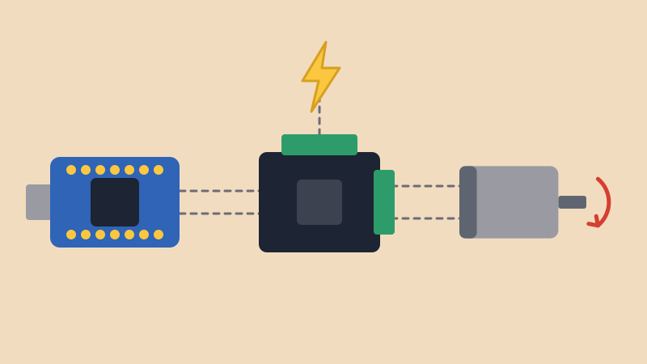
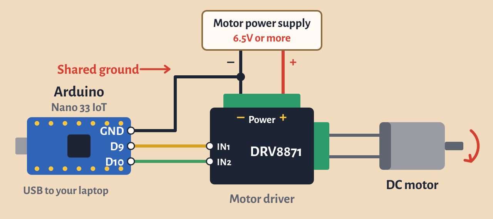

A servo turns to an angle. A DC motor just keeps spinning, which is what you want for wheels, fans or anything that needs to keep turning.
A DC motor needs much more power than an Arduino pin can give, so we use a motor driver. The Arduino sends a small signal, and the driver uses it to switch a separate, stronger power supply on and off for the motor. It can also reverse the motor’s direction.
This lesson uses the Adafruit DRV8871. For a more complete reference, see the Adafruit guide and the DRV8871 datasheet.
For this lesson, please collect the following:
The driver’s screw terminals come soldered on, but you need to solder on the header pins for IN1 and IN2. See the Soldering Workshop if you need a refresher.
analogWrite(). For example, 170 out of 255 on a 9V
supply averages about 6V. A motor rated for 6.5V or more is a
better match, though.
The drawing puts the Nano’s pins next to each other to keep the wires clear. On the real board they are in different places, so go by the labels printed on your Nano.
Keep the motor’s power away from the Nano. Power the Nano from the USB, and don’t connect the driver’s + Power terminal to Vin or to any pin. The Nano’s pins only take 3.3V. The one wire they share is the ground.
The two inputs decide what the motor does:
To control the speed, use analogWrite() on one
input instead of HIGH. This is the same PWM we used
in Fade, so pins 9 and 10 both
work. The higher the number, the faster the motor spins.
int in1 = 9; // PWM pin to the driver's IN1
int in2 = 10; // PWM pin to the driver's IN2
void setup() {
pinMode(in1, OUTPUT);
pinMode(in2, OUTPUT);
}
void loop() {
// forward at about half speed
analogWrite(in1, 128);
digitalWrite(in2, LOW);
delay(2000);
// coast to a stop
digitalWrite(in1, LOW);
digitalWrite(in2, LOW);
delay(1000);
// reverse at about half speed
digitalWrite(in1, LOW);
analogWrite(in2, 128);
delay(2000);
// coast to a stop
digitalWrite(in1, LOW);
digitalWrite(in2, LOW);
delay(1000);
}Try changing the 128 to see how the speed
changes. What is the lowest number that gets your motor to
start? Below that, it may just hum without turning.
Connect a potentiometer or photoresistor to A0. The Arduino Cheat Sheet has the wiring for both. Then use map() to turn its reading into a speed:
int in1 = 9; // PWM pin to the driver's IN1
int in2 = 10; // PWM pin to the driver's IN2
int sensorPin = A0;
void setup() {
pinMode(in1, OUTPUT);
pinMode(in2, OUTPUT);
digitalWrite(in2, LOW); // keep IN2 low so the motor only goes forward
}
void loop() {
int reading = analogRead(sensorPin);
int motorSpeed = map(reading, 0, 1023, 0, 255);
analogWrite(in1, motorSpeed);
delay(10);
}